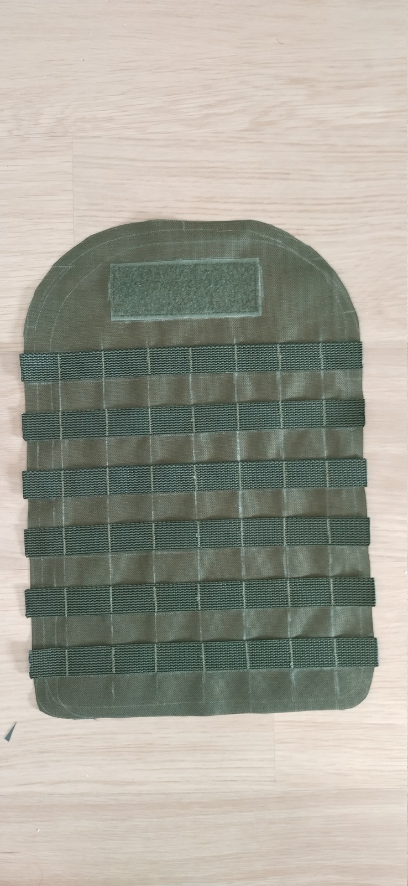
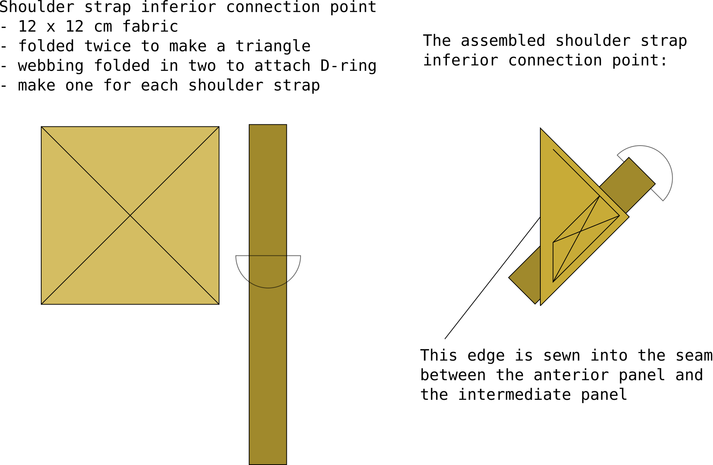

Backpack, daypack, large#
Patterns for all pieces#
The pack is made from 4 main pieces:
anterior panel: agains the wearers back, has the main exterior fabric and in internal pocket
posterior panel: lots of PALS on the exterior face, two interior zipper pockets on the interior face
intermediate panel: goes around the pack, stariting grom the bottom, going over the middles and back down the other side. This panel connects the anterior and posteiror panels
inferior panel
Annotated patterns drawn in to-scale SVG (scalable vector graphics) available here (right click image, open in new tab, or save image and open with inkscape):

Regarding reading the pattern, many of the directional terms are borrowed terms from medical anatomy, since I find they are less ambiguous in my opinoin. In case it’s confusing, you’ll be fine by translating as:
inferior: bottom
superior: top
anterior: front
posterior: back
See the pattern lexicon and conventions for more information.
Finished piece#

Posterior panel#
The exterior face of the posterior panel has [Sewing PALS](../techiques/Sewing PALS) webbing, a patch of velcro loop, and the side release bulckle resptacles for the compression straps. You may also leave the compression strap buckles, and opt for a beavertail instead.
Posterior panel main section#
For the posterior panel main section, sew in the fuzzy velcro for morale paches and bartack all the PALS. For the PALS webbing, I recommend you start with bartacking at the center of the webbing, and the work your way out toward the ends of the webbing. That way you won’t and up with any strange slack in your pals rows.
Exterior face of the posterior panel main section:


Shoulder harness inferior anchor point#
Make one for each shoulder strap. This is what we are making:
Materials per each:
Square piece of pack main fabric
Webbing
D-ring

A completed anchor point looks like this:

NOTE: I have changed webbing to 10cm, it was 10. It now does NOT extend out from the triangle as it does in the photo. Otherwise there is way too much in material in the seam when this gets inserted in the seam between the anterior and medial panel. It’s:
4 layers of codura from this triangle
2 layers form the anterior panel
2 layers form the exterior panel
2 layers of webbing.
1 layer of PALS webbing if you’re unluckly.
So save some work and shorten the webbing to 10cm, and bartack it the this reinforcement triangle.
The inferior section of the shoulder harness is connected to the pack with a steel D-ring.
Fold the rectangular piece of fabric twice to make a triangle
first fold made so wrong sides of the fabric face each other
fold the length of webbing in half, leaving the D-ring in the fold
insert the folded webbing into the second fold of the fabric
These anchor points will be sewn into the seam between the anterior panel and medial panel. Both triangles are identical if you use D-ring. You you connect ladderlock buckles into these instead of D-ring, you need to make sure they are mirrored: the left and right anchor points have the buckle flipped. But in this case we use the D-ring, so both are identical.
Shoulder harness module#
This pack is compatible with modular shoulder harnesses. See wither of these for the full assembly instructions